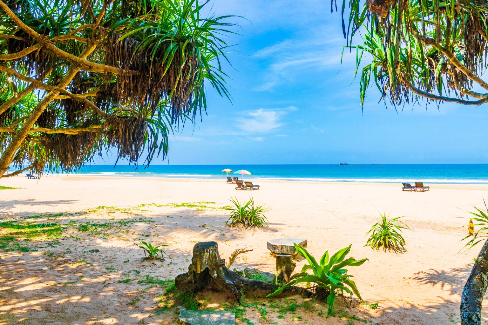
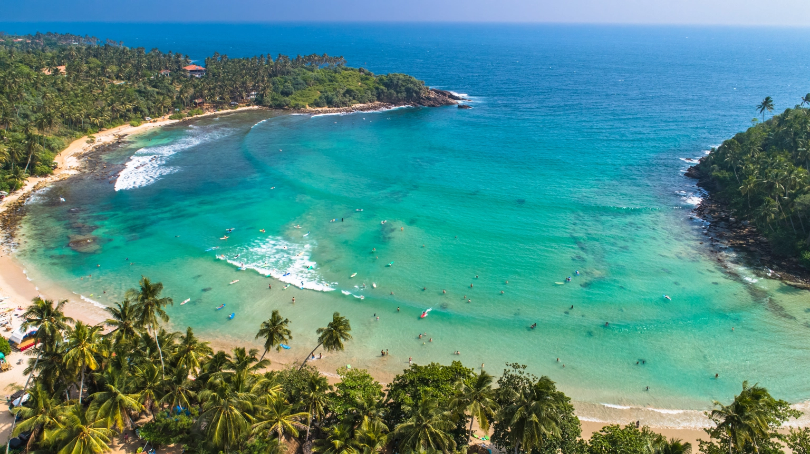
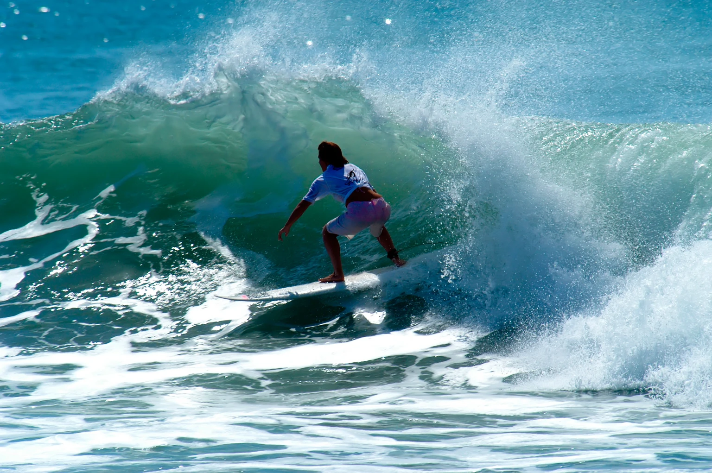
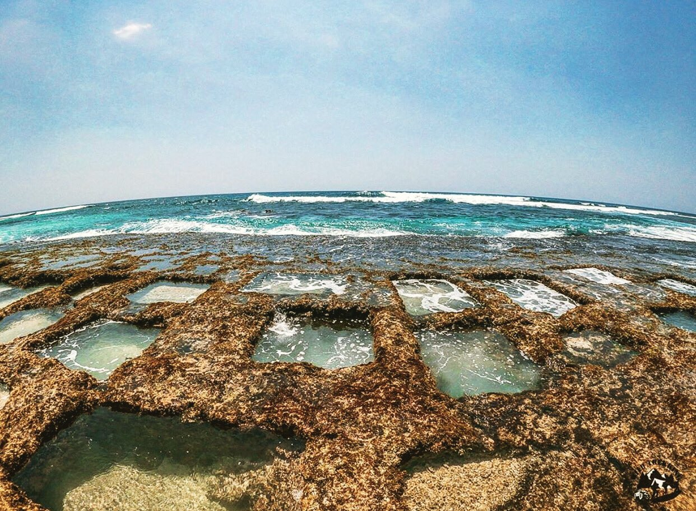
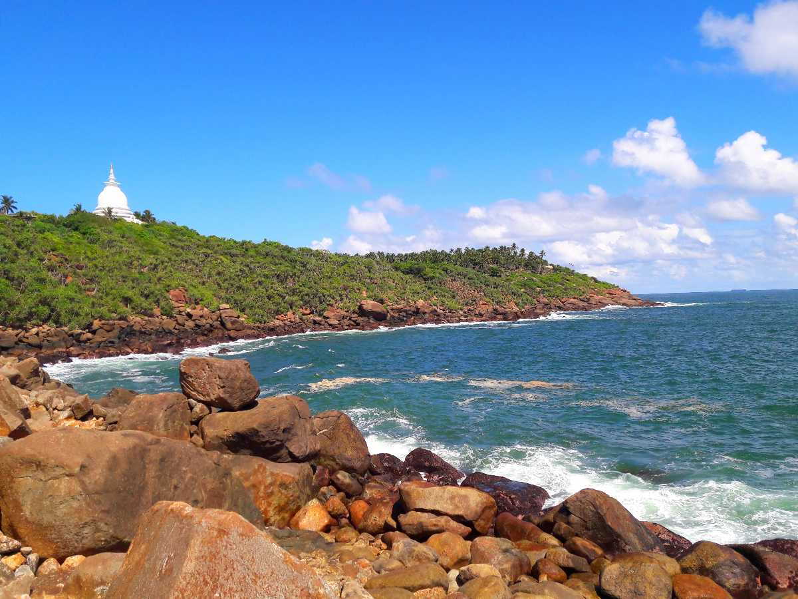
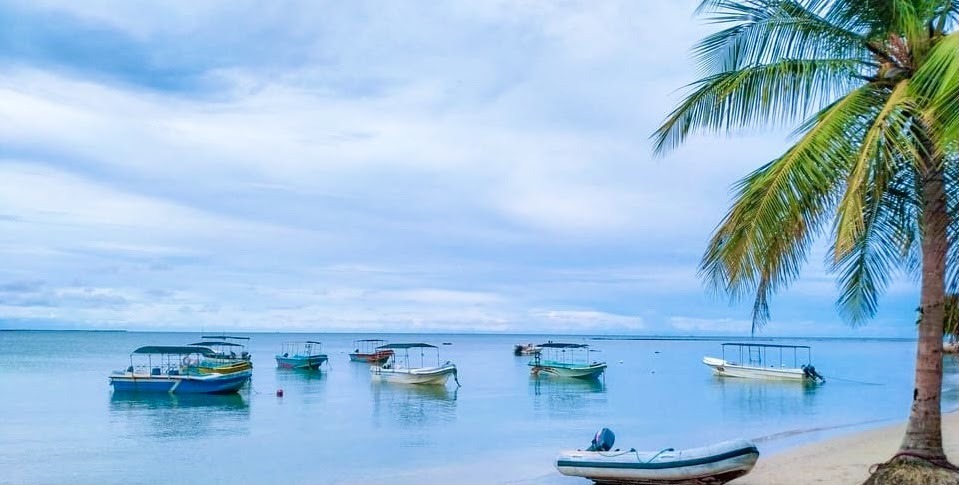
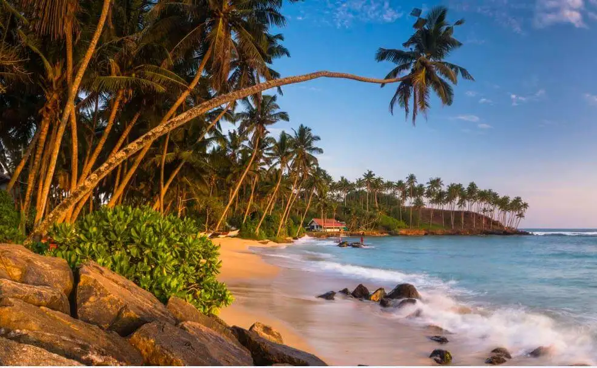
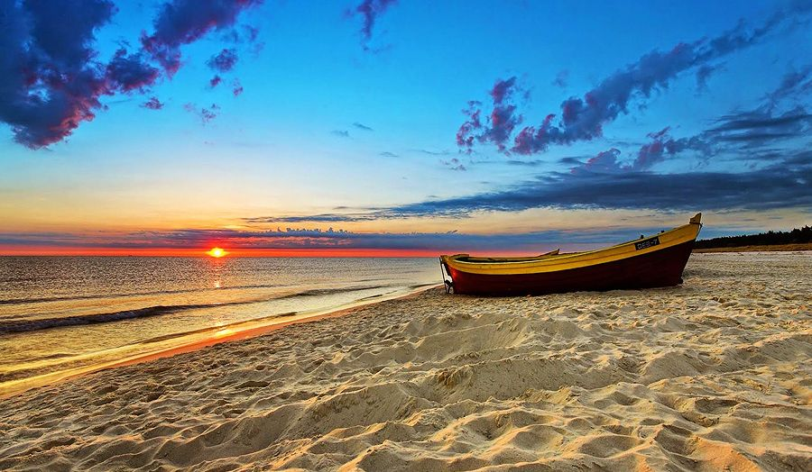
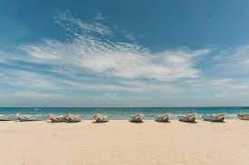
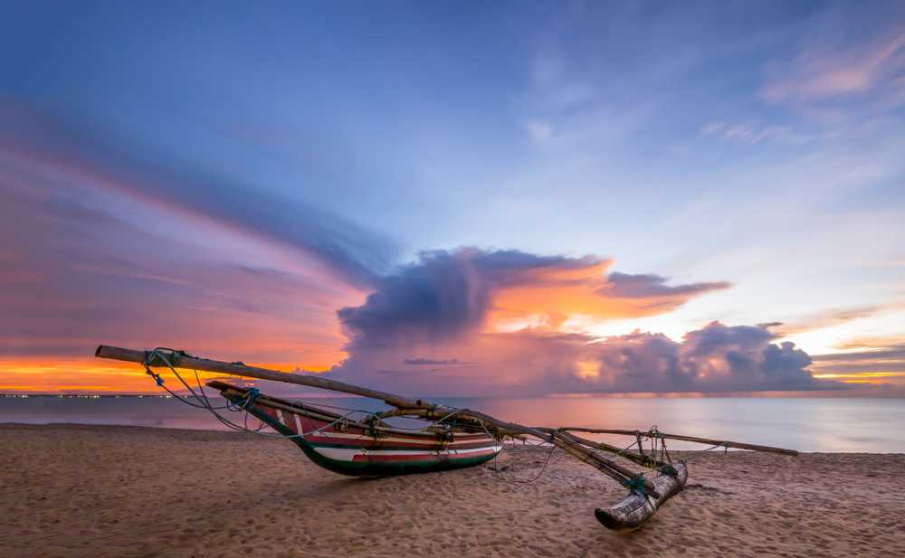

Mirissa beach would have claim enough to feature on your itinerary, with a host of restaurants
ready to bring a cold beer to your hammock or a barbecued lobster to tables set up on the
golden sand. Factor in its offshore visitors and a stay here becomes pretty much compulsory.
In February and March blue whales migrate along the coast, and plenty of whale-watching trips
depart from here to see them.
|
 |
|  |
For bohemian surf chic there is only once choice on the south coast: Hiriketiya. “Hiri” has
really taken off in recent years, with boutique hotels, craft shops, yoga workshops and cafés
serving flat whites and vegan burgers springing up to keep bronzed and buffed surfers
entertained when they are on land. The beautiful beach curves around a sheltered horseshoe
bay, making Hiri a great spot for swimming too.
|
If what you crave is some laid-back surf culture, there's no better place to hang out for a few
days than Arugam Bay on the east coast. The breaks here are widely considered to be
Sri Lanka's best, and draw surfers from around the world from April through September.
Out of the water, chilled-out bars and restaurants, affordable accommodation and frequent
beach parties make the resort a popular place with backpackers.
|
 |
|  |
Quieter than many of the resort towns that pepper the south coast, Talpe is that perfect
combination of seclusion and accessibility. Exclusive hotels and family-run guesthouses alike
sit back from the golden sands of the surf-thrashed beach, hidden among coconut palms and frangipani trees.
A big bonus is its proximity to the Dutch colonial town of Galle and the spice
plantations of the interior, both just a short tuk-tuk journey away.
|
One of the more secluded beaches in the southern coast, Jungle Beach is an idyllic stretch of golden sands that allow you to admire the grandeur of the Rumassala Hill on one side, and the stunning Indian Ocean on the other.
Ideal after a trek to Rumassala Hill, make your way to Jungle Beach to shake off the
humidity and heat. Wade and weave through a thick jungle before finding the
enticing blue waters and warm golden sands. A refreshing swim before heading back to one of
our Taru Villas properties in Galle Fort will be ideal for your beach holiday.
|
 |
|  |
Pasikuda is the pin up of picture postcard beaches thanks to its soft white sand and translucent water.
Between May and September, this is the best place in Sri Lanka for a Sri Lankan beach holiday.
Most days are cloudless, the ocean is warm, and water clarity is very good which makes it ideal
for snorkelling, diving, sailing and a host of other water sports. The curve of Pasikuda bay means
that swimming can be enjoyed throughout the year.
Pasikuda is a relatively new destination in Sri Lanka for luxury beach holidays and the resorts lining Pasikuda,
such as Uga Bay, all benefit from generous manicured gardens, wide-open beachfronts and the most surreal ocean views.
The original village of Pasikuda with its guesthouses, hawker stalls and fishing boats
infuse local flavor to the south of the bay. During the high season, jet skis, kayaks and sailing boats occupy the water.
|
Marble beach is one of the most amazing beach on the Sri Lankan east coast.
This white sand beach is said to be one of the cleanest beaches,
which is also a great place for solo travel. With an array of activities,
the beach also offers a line of open restaurants. With a small island nestled here,
the beach is also frequented by endemic bird and mammal species of birds and mammals.
The beach also has a parking space.
|
 |
|  |
QThe Nilaveli Beach is approximately 1 kilometre long and is surrounded by lush,
green vegetation on both sides. Onlooking the beach from a little far away is Pigeon Island,
which is a famous spot for snorkeling and diving.
The reef there provides a perfect place to explore the ocean.
The Nilaveli Beach is a small stretch of white sand with blue waters creating moderate waves,
suitable for amateur surfing. The beach is clean and often free from the crowd,
which makes it even more attractive for travelers and tourists.
|
Uppuveli Beach, Located in Trincomalee District,
Uppuveli Beach is a famous tourist spot. The beach also has various local food options,
especially seafood. Ever since the beach witnessed the 2004 Tsunami tragedy it has had declining tourism.
Nonetheless, today, these crystal waters offer many activities such as water skiing and wakeboarding.
|
 |
|  |
The gorgeous island of Sri Lanka is home to some of the world's most stunning beaches.
If you are looking for a holiday where you can spend days lazing around on
sandy golden beaches with shimmering blue waters,
then you are in for a treat! The best place in Sri Lanka to visit to enjoy its beaches is Negombo,
which is located just 15 minutes away from the Bandaranaike International Airport.
Negombo beaches attract visitors from across the country as well as the globe.
Before you leave for your trip, learn a little more about the best things to do while you are
in the little coastal town affectionately called the “Little Rome” of Sri Lanka.
|